2025 Advanced Higher Mathematics - Paper 1 marking instructions
Source: Scottish Qualifications Authority (SQA) / Qualifications Scotland. This is a StemInteract HTML companion, not an official HTML edition. Selectable text is supplied alongside original page images. Use the images or original PDF for equations, powers, fractions, vector notation, tables and diagrams; text extraction cannot fully preserve mathematical layout.
Jump to a question
PDF page 1
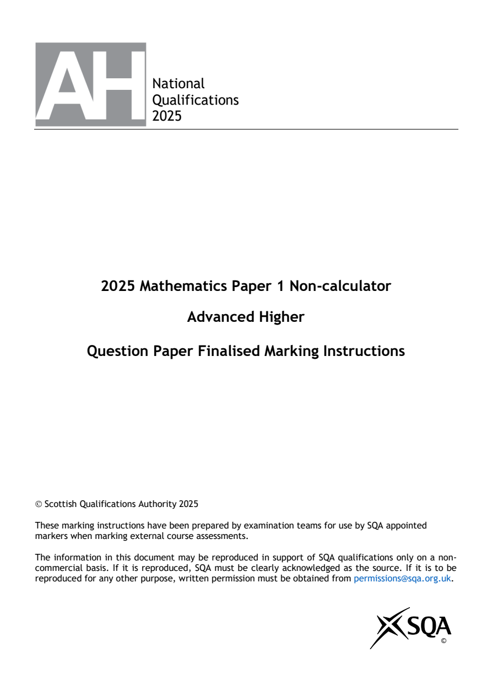
Selectable page text
National
Qualifications
2025
2025 Mathematics Paper 1 Non-calculator
Advanced Higher
Question Paper Finalised Marking Instructions
© Scottish Qualifications Authority 2025
These marking instructions have been prepared by examination teams for use by SQA appointed
markers when marking external course assessments.
The information in this document may be reproduced in support of SQA qualifications only on a non-
commercial basis. If it is reproduced, SQA must be clearly acknowledged as the source. If it is to be
reproduced for any other purpose, written permission must be obtained from permissions@sqa.org.uk.
©PDF page 2
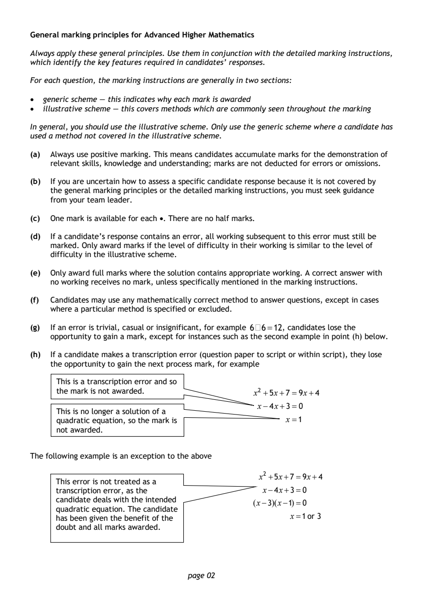
Selectable page text
General marking principles for Advanced Higher Mathematics
Always apply these general principles. Use them in conjunction with the detailed marking instructions,
which identify the key features required in candidates’ responses.
For each question, the marking instructions are generally in two sections:
• generic scheme — this indicates why each mark is awarded
• illustrative scheme — this covers methods which are commonly seen throughout the marking
In general, you should use the illustrative scheme. Only use the generic scheme where a candidate has
used a method not covered in the illustrative scheme.
(a) Always use positive marking. This means candidates accumulate marks for the demonstration of
relevant skills, knowledge and understanding; marks are not deducted for errors or omissions.
(b) If you are uncertain how to assess a specific candidate response because it is not covered by
the general marking principles or the detailed marking instructions, you must seek guidance
from your team leader.
(c) One mark is available for each •. There are no half marks.
(d) If a candidate’s response contains an error, all working subsequent to this error must still be
marked. Only award marks if the level of difficulty in their working is similar to the level of
difficulty in the illustrative scheme.
(e) Only award full marks where the solution contains appropriate working. A correct answer with
no working receives no mark, unless specifically mentioned in the marking instructions.
(f) Candidates may use any mathematically correct method to answer questions, except in cases
where a particular method is specified or excluded.
(g) If an error is trivial, casual or insignificant, for example 6´6=12, candidates lose the
opportunity to gain a mark, except for instances such as the second example in point (h) below.
(h) If a candidate makes a transcription error (question paper to script or within script), they lose
the opportunity to gain the next process mark, for example
This is a transcription error and so
the mark is not awarded. x² +5x+7 =9x+4
x−4x+3=0
This is no longer a solution of a
quadratic equation, so the mark is x=1
not a warded.
The following example is an exception to the above
x² +5x+7=9x+4
This error is not treated as a
transcription error, as the x−4x+3=0
candidate deals with the intended
(x−3)(x−1)=0
quadratic equation. The candidate
has been given the benefit of the x=1 or 3
doubt and all marks awarded.
page 02PDF page 3
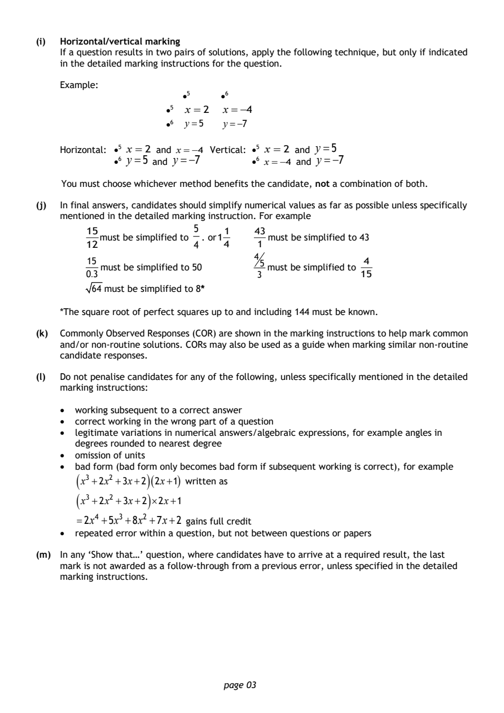
Selectable page text
(i) Horizontal/vertical marking
If a question results in two pairs of solutions, apply the following technique, but only if indicated
in the detailed marking instructions for the question.
Example:
•5 •6
•5 x = 2 x = −4
•6 y=5 y=−7
Horizontal: •5 x = x rtical: •⁵ x = 2 and y =5
•6 y =5² a ^{a} n ⁿ d ^{d} y =⁼−⁻7⁴ ^{V} ^{e} •6 x=−4 and y =−7
You must choose whichever method benefits the candidate, not a combination of both.
(j) In final answers, candidates should simplify numerical values as far as possible unless specifically
mentioned in the detailed marking instruction. For example
5
15 1 43
must be simplified to . or1 must be simplified to 43
12 4 4 1
4
15 4
5
must be simplified to 50 must be simplified to
0.3 3 15
64 must be simplified to 8*
*The square root of perfect squares up to and including 144 must be known.
(k) Commonly Observed Responses (COR) are shown in the marking instructions to help mark common
and/or non-routine solutions. CORs may also be used as a guide when marking similar non-routine
candidate responses.
(l) Do not penalise candidates for any of the following, unless specifically mentioned in the detailed
marking instructions:
• working subsequent to a correct answer
• correct working in the wrong part of a question
• legitimate variations in numerical answers/algebraic expressions, for example angles in
degrees rounded to nearest degree
• omission of units
• bad form (bad form only becomes bad form if subsequent working is correct), for example
(
x³+2x² +3x+2
)(2x+1)
written as
( )
x³ +2x² +3x+2 ×2x+1
=2x⁴ +5x³ +8x² +7x+2 gains full credit
• repeated error within a question, but not between questions or papers
(m) In any ‘Show that…’ question, where candidates have to arrive at a required result, the last
mark is not awarded as a follow-through from a previous error, unless specified in the detailed
marking instructions.
page 03PDF page 4
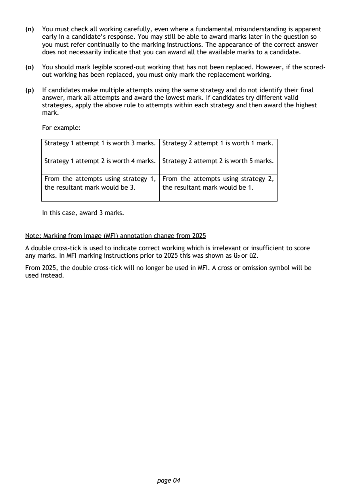
Selectable page text
(n) You must check all working carefully, even where a fundamental misunderstanding is apparent
early in a candidate’s response. You may still be able to award marks later in the question so
you must refer continually to the marking instructions. The appearance of the correct answer
does not necessarily indicate that you can award all the available marks to a candidate.
(o) You should mark legible scored-out working that has not been replaced. However, if the scored-
out working has been replaced, you must only mark the replacement working.
(p) If candidates make multiple attempts using the same strategy and do not identify their final
answer, mark all attempts and award the lowest mark. If candidates try different valid
strategies, apply the above rule to attempts within each strategy and then award the highest
mark.
For example:
Strategy 1 attempt 1 is worth 3 marks. Strategy 2 attempt 1 is worth 1 mark.
Strategy 1 attempt 2 is worth 4 marks. Strategy 2 attempt 2 is worth 5 marks.
From the attempts using strategy 1, From the attempts using strategy 2,
the resultant mark would be 3. the resultant mark would be 1.
In this case, award 3 marks.
Note: Marking from Image (MFI) annotation change from 2025
A double cross-tick is used to indicate correct working which is irrelevant or insufficient to score
any marks. In MFI marking instructions prior to 2025 this was shown as ü or ü2.
2
From 2025, the double cross-tick will no longer be used in MFI. A cross or omission symbol will be
used instead.
page 04PDF page 5
Paper 1, Question 1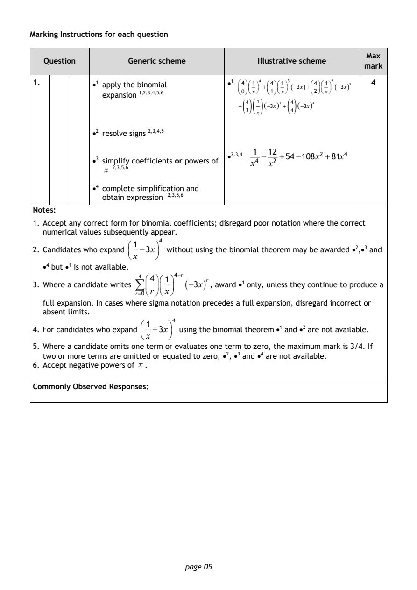
Selectable page text
Marking Instructions for each question
Max
Question Generic scheme Illustrative scheme
mark
1. •1 apply the binomial •1 4 1 ⁴ + 4 1 ³ (−3x)+ 4 1 ² (−3x)² 4
expansion ¹^{,}²^{,}³,4,5,6 0x 1x 2x
+ ( 4 )( 1 ) (−3x)³ + ( 4 ) (−3x)⁴
3 x 4
•2 resolve signs ²^{,}³^{,}⁴,5
1 12
•2,3,4 − +54−108x² +81x⁴
•3 simpl_{,}i₅f_{,}₆y coefficients or powers of x⁴ x²
x ²^{,}³
•4 complete simplificat₃i_{,}o₅_{,}n₆ and
obtain expression ²^{,}
Notes:
1. Accept any correct form for binomial coefficients; disregard poor notation where the correct
numerical values subsequently appear.
1
2. Candidates who expand −3x ⁴ without using the binomial theorem may be awarded •²,•3 and
x
•4 but •¹ is not available.
41⁴⁻^{r}
3. Where a candidate writes ∑⁴ (−3x)^{r}, award •¹ only, unless they continue to produce a
r=0 r x
full expansion. In cases where sigma notation precedes a full expansion, disregard incorrect or
absent limits.
1
4. For candidates who expand +3x ⁴ using the binomial theorem •¹ and •² are not available.
x
5. Where a candidate omits one term or evaluates one term to zero, the maximum mark is 3/4. If
two or more terms are omitted or equated to zero, •², •3 and •⁴ are not available.
6. Accept negative powers of x.
Commonly Observed Responses:
page 05PDF page 6
Paper 1, Question 2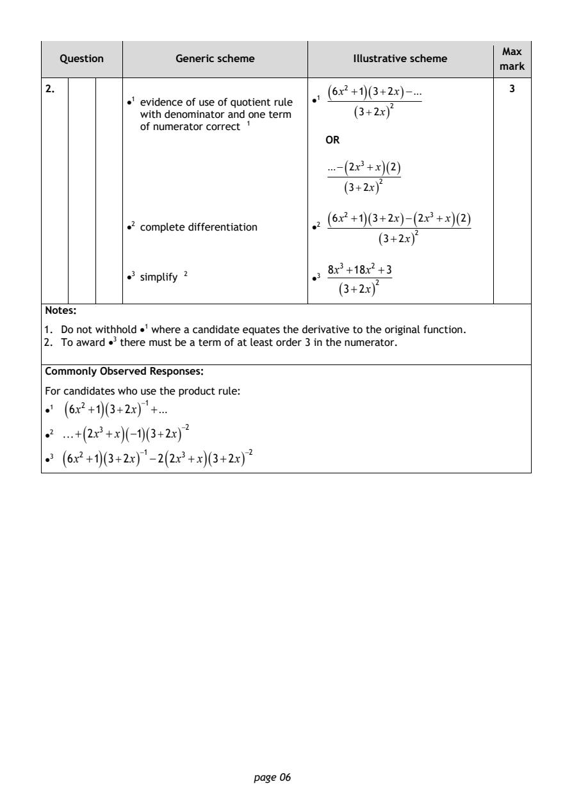
Selectable page text
Max
Question Generic scheme Illustrative scheme
mark
2. ( 6x² +1 )(3+2x)−... 3
•1 evidence of use of quotient rule •1
with denominator and one term
(3+2x)²
of numerator correct ¹
OR
...−
(
2x³ +x
)(2)
(3+2x)²
(
6x² +1
)(3+2x)− (
2x³ +x
)(2)
•2 complete differentiation •2
(3+2x)²
8x³ +18x² +3
•3 simplify ² •3
(3+2x)²
Notes:
1. Do not withhold •¹ where a candidate equates the derivative to the original function.
2. To award •³ there must be a term of at least order 3 in the numerator.
Commonly Observed Responses:
For candidates who use the product rule:
•1
(
6x² +1
)(3+2x)⁻¹+...
•2 +
(
2x³ +x
)(−1)(3+2x)⁻²
•3
(
6x² +1
)(3+2x)⁻¹−2 (
2x³ +x
)(3+2x)⁻²
page 06PDF page 7
Paper 1, Question 3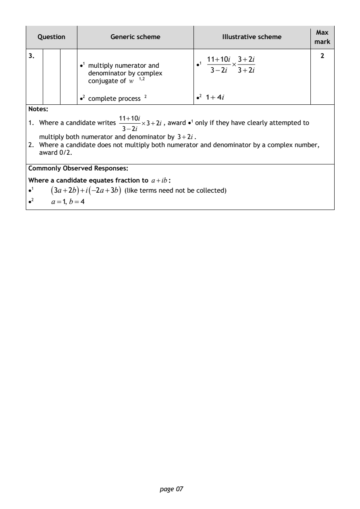
Selectable page text
Max
Question Generic scheme Illustrative scheme
mark
3. 2
11+10i 3+2i
•1 multiply numerator and •1 ×
3−2i 3+2i
denominator by co_{,}₂mplex
conjugate of w ¹
•2 complete process ² •2 1+4i
Notes:
11+10i
1. Where a candidate writes ×3+2i, award •¹ only if they have clearly attempted to
3−2i
multiply both numerator and denominator by 3+2i.
2. Where a candidate does not multiply both numerator and denominator by a complex number,
award 0/2.
Commonly Observed Responses:
Where a candidate equates fraction to a+ib:
•1 (3a+2b)+i(−2a+3b) (like terms need not be collected)
•2 a=1, b=4
page 07PDF page 8
Paper 1, Question 4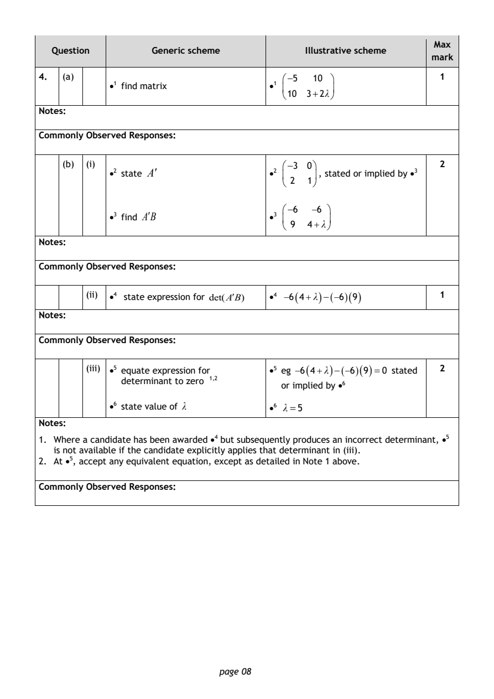
Selectable page text
Max
Question Generic scheme Illustrative scheme
mark
4. (a) −5 10 1
•1 find matrix •1
10 3+2λ
Notes:
Commonly Observed Responses:
(b) (i) −3 0 2
•2 state A′ •2 , stated or implied by •³
2 1
−6 −6
•3 find A′B •3
9 4+λ
Notes:
Commonly Observed Responses:
(ii) •4 state expression for det(A′B) •4 −6(4+λ)−(−6)(9) 1
Notes:
Commonly Observed Responses:
(iii) •5 equate expression for •5 eg −6(4+λ)−(−6)(9)=0 stated 2
determinant to zero ¹^{,}²
or implied by •⁶
•6 state value of λ •6 λ=5
Notes:
1. Where a candidate has been awarded •⁴ but subsequently produces an incorrect determinant, •⁵
is not available if the candidate explicitly applies that determinant in (iii).
2. At •⁵, accept any equivalent equation, except as detailed in Note 1 above.
Commonly Observed Responses:
page 08PDF page 9
Paper 1, Question 5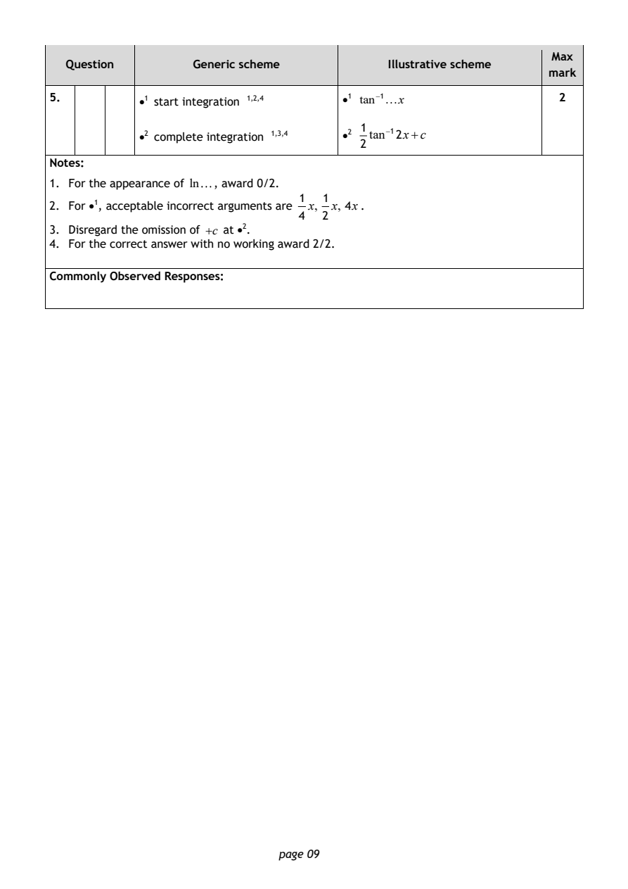
Selectable page text
Max
Question Generic scheme Illustrative scheme
mark
5. •1 start integration ¹^{,}²^{,}4 •1 tan⁻¹ x 2
1
•2 complete integration ¹^{,}³^{,}4 •2 tan⁻¹2x+c
2
Notes:
1. For the appearance of ln , award 0/2.
1 1
2. For •¹, acceptable incorrect arguments are x, x, 4x.
4 2
3. Disregard the omission of +c at •².
4. For the correct answer with no working award 2/2.
Commonly Observed Responses:
page 09PDF page 10
Paper 1, Question 6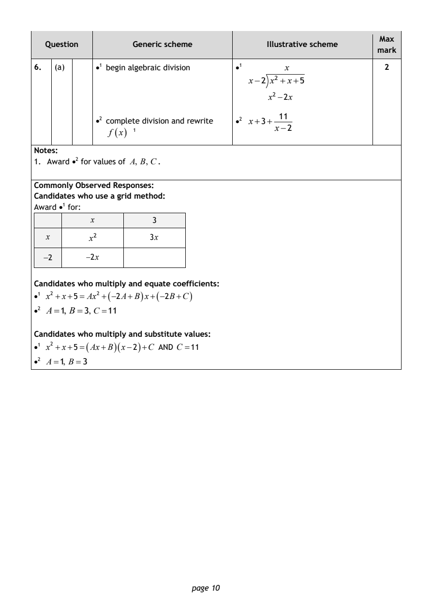
Selectable page text
Max
Question Generic scheme Illustrative scheme
mark
6. (a) •1 begin algebraic division •1 x 2
x−2 x² +x+5
x²−2x
11
•2 complete division and rewrite •2 x+3+
x−2
f (x) ¹
Notes:
1. Award •² for values of A, B, C.
Commonly Observed Responses:
Candidates who use a grid method:
Award •¹ for:
x 3
x x² 3x
−2 −2x
Candidates who multiply and equate coefficients:
•1 x² +x+5= Ax² +(−2A+B)x+(−2B+C)
•2 A=1, B=3, C =11
Candidates who multiply and substitute values:
•1 x² +x+5=(Ax+B)(x−2)+C AND C =11
•2 A=1, B=3
page 10PDF page 11
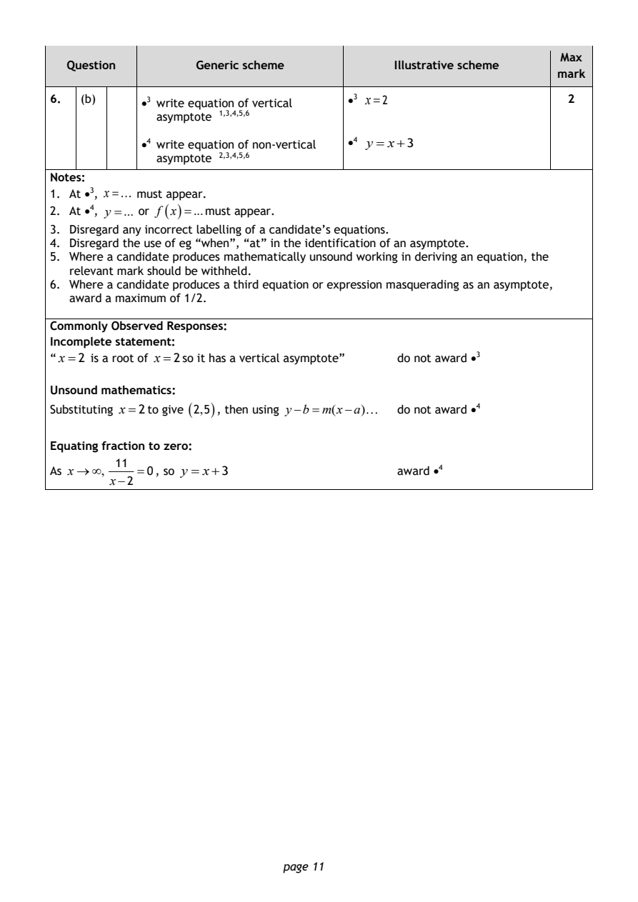
Selectable page text
Max
Question Generic scheme Illustrative scheme
mark
6. (b) •3 write equation_{,}₄ _{,}o₅_{,}f₆ vertical •3 x=2 2
asymptote ¹^{,}³
•4 write equation_{,}₄ _{,}o₅_{,}f₆ non-vertical •4 y = x+3
asymptote ²^{,}³
Notes:
1. At •³, x= must appear.
2. At •⁴, y =... or f (x)=...must appear.
3. Disregard any incorrect labelling of a candidate’s equations.
4. Disregard the use of eg “when”, “at” in the identification of an asymptote.
5. Where a candidate produces mathematically unsound working in deriving an equation, the
relevant mark should be withheld.
6. Where a candidate produces a third equation or expression masquerading as an asymptote,
award a maximum of 1/2.
Commonly Observed Responses:
Incomplete statement:
“x=2 is a root of x=2so it has a vertical asymptote” do not award •³
Unsound mathematics:
Substituting x=2to give (2,5), then using y−b=m(x−a) do not award •⁴
Equating fraction to zero:
11
As x→∞, =0, so y = x+3 award •⁴
x−2
page 11PDF page 12
Paper 1, Question 7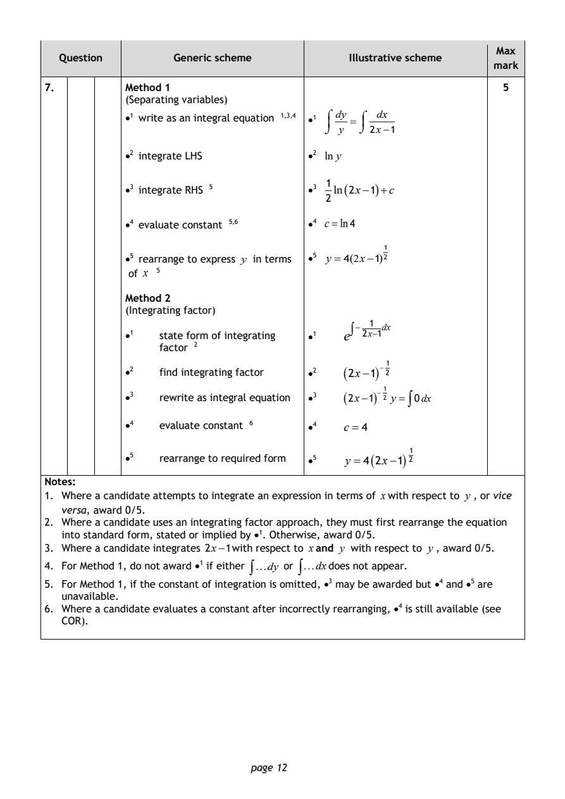
Selectable page text
Max
Question Generic scheme Illustrative scheme
mark
7. Method 1 5
(Separating variables)
•1 write as an integral equation ¹^{,}³^{,}4 •1 ⌠ dy = ⌠ dx
⌡ y ⌡ 2x−1
•2 integrate LHS •2 ln y
1
•3 integrate RHS ⁵ •3 ln(2x−1)+c
2
•4 evaluate constant ⁵^{,}⁶ •4 c=ln4
1
•5 rearrange to express y in terms •5 y =4(2x−1)²
of x ⁵
Method 2
(Integrating factor)
∫ dx
•1 state form of integrating •1 e ⁻²^{x}¹⁻1
factor ²
•2 find integrating factor •2 (2x−1)⁻²¹
•3 rewrite as integral equation •3 (2x−1)⁻²¹ y =∫0dx
•4 evaluate constant ⁶ •4 c=4
•5 rearrange to required form •5 y =4(2x−1)²¹
Notes:
1. Where a candidate attempts to integrate an expression in terms of xwith respect to y, or vice
versa, award 0/5.
2. Where a candidate uses an integrating factor approach, they must first rearrange the equation
into standard form, stated or implied by •¹. Otherwise, award 0/5.
3. Where a candidate integrates 2x−1with respect to xand y with respect to y, award 0/5.
4. For Method 1, do not award •¹ if either ∫ dy or ∫ dxdoes not appear.
5. For Method 1, if the constant of integration is omitted, •³ may be awarded but •⁴ and •⁵ are
unavailable.
6. Where a candidate evaluates a constant after incorrectly rearranging, •⁴ is still available (see
COR).
page 12PDF page 13
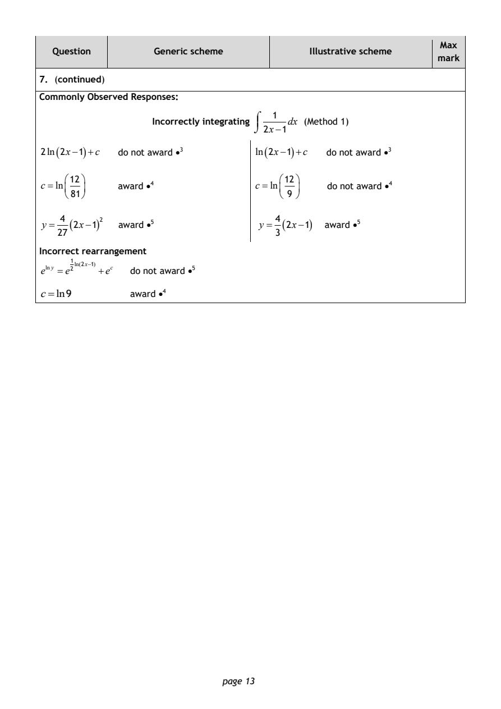
Selectable page text
Max
Question Generic scheme Illustrative scheme
mark
7. (continued)
Commonly Observed Responses:
⌠ 1
Incorrectly integrating dx (Method 1)
⌡ 2x−1
2ln(2x−1)+c do not award •³ ln(2x−1)+c do not award •³
12 12
c =ln award •⁴ c =ln do not award •⁴
81 9
4 4
y = (2x−1)² award •⁵ y = (2x−1) award •⁵
27 3
Incorrect rearrangement
−1)
e^{l}ⁿ^{y} =e²¹^{l}ⁿ⁽²^{x} +e^{c} do not award •⁵
c=ln9 award •⁴
page 13PDF page 14
Paper 1, Question 8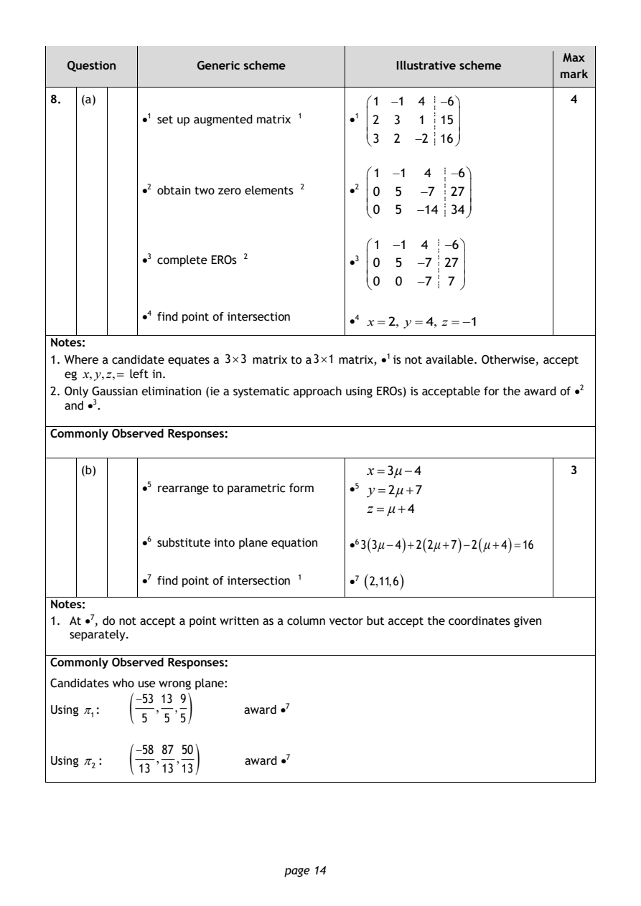
Selectable page text
Max
Question Generic scheme Illustrative scheme
mark
8. (a) 1 −1 4 −6 4
•1 set up augmented matrix ¹ •1 2 3 1 15
3 2 −2 16
1 −1 4 −6
•2 obtain two zero elements ² •2 0 5 −7 27
0 5 −14 34
1 −1 4 −6
•3 complete EROs ² •3 0 5 −7 27
0 0 −7 7
•4 find point of intersection •4 x =2, y =4, z =−1
Notes:
1. Where a candidate equates a 3×3 matrix to a3×1 matrix, •¹ is not available. Otherwise, accept
eg x,y,z,= left in.
2. Only Gaussian elimination (ie a systematic approach using EROs) is acceptable for the award of •²
and •³.
Commonly Observed Responses:
(b) x=3μ−4 3
•5 rearrange to parametric form •5 y=2μ+7
z = μ+4
•6 substitute into plane equation •63(3μ−4)+2(2μ+7)−2(μ+4)=16
•7 find point of intersection ¹ •7 ( 2,11,6 )
Notes:
1. At •⁷, do not accept a point written as a column vector but accept the coordinates given
separately.
Commonly Observed Responses:
Candidates who use wrong plane:
( )
−53 13 9
Using π₁: , , award •⁷
5 5 5
( )
−58 87 50
Using π₂: , , award •⁷
13 13 13
page 14PDF page 15
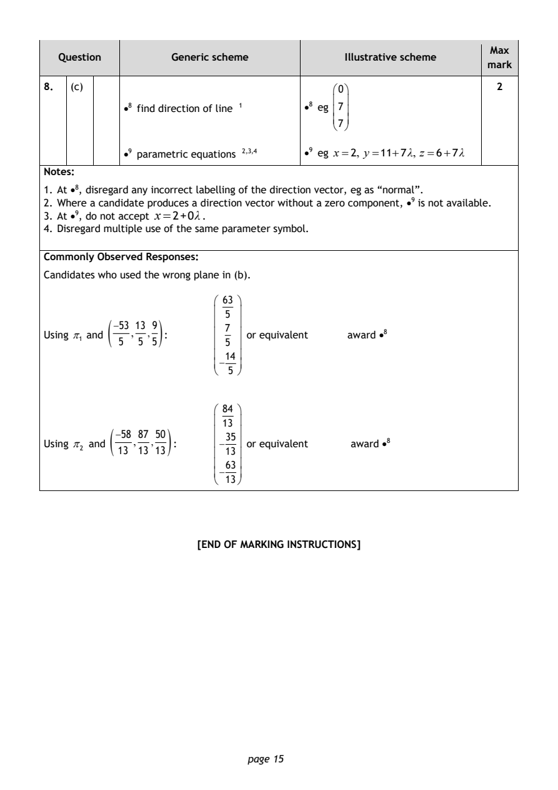
Selectable page text
Max
Question Generic scheme Illustrative scheme
mark
8. (c) 0 2
•8 find direction of line ¹ •8 eg 7
7
•9 parametric equations ²^{,}³^{,}4 •9 eg x=2, y=11+7λ, z =6+7λ
Notes:
1. At •⁸, disregard any incorrect labelling of the direction vector, eg as “normal”.
2. Where a candidate pro s a direction vector without a zero component, •⁹ is not available.
3. At •⁹, do not accept x^{d}=^{u}2^{c}^{e}+0λ.
4. Disregard multiple use of the same parameter symbol.
Commonly Observed Responses:
Candidates who used the wrong plane in (b).
63
5
( )
−53 13 9
7
Using π₁ and , , : or equivalent award •⁸
5 5 5 5
14
−
5
84
13
( )
−58 87 50
35
Using π₂ and , , : − or equivalent award •⁸
13 13 13 13
63
−
13
[END OF MARKING INSTRUCTIONS]
page 15